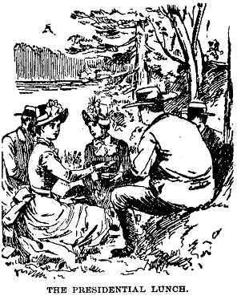
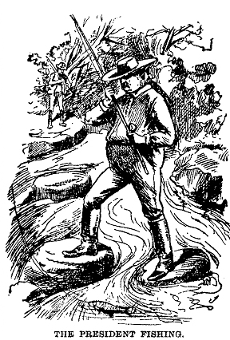

The broad-backed man is President Cleveland, and the handsome, athletic-looking lady in the plain, gray woolen dress and broadbrimmed straw hat is his wife. The other lady is her mother, and the jolly looking fourth person, the most richly attired member of the party, in the bottle green suit, is Dr. Ward, of Albany. The spot that the president has chosen for his vacation is the most secluded portion of the Adirondack wilderness, twenty-four miles away from the nearest railroad station. The log cottage which the president occupies is one that was constructed by the guides thereabout in the winter season. On the ground floor are a sitting room and bedroom, and above the whole is a large attic room occupied by Mrs. Folsom. Here is a picture of democratic simplicity for you. The bench outside the back door with the water pail and tin basin for ablution is missing, but wooden buttons are on the doors instead of knobs, the bedsteads are made of pine and bark, the quaint furniture, the strips of rag carpet on the floor all remind the president that he is many miles from the White House and its anxieties. The whole cabin and its contents, which the president and party occupies, look as if it could be duplicated for $200. Quite a contrast this with the palatial mansion which they left behind in Washington with its expenses of over $100,000 a year.

One of the guides who accompanied the president on a fishing trip last year encroached on Davy Crockett with the following: He said that when the president first threw his line in Lake Saranac there was quite a commotion among the fish. A great trout stuck his head out of the water with a frightened look on his wet face, and asked, "Is that you, President Cleveland?" "Yes, my name is Cleveland." "All right, Mr.Cleveland, I am at your service." The fish leaped out of the water to the president's feet as dead as a canned mackerel. This story, other guides claim, is a fabrication. They hold that the tremendous catches the president secures is not due to any partiality on the part of the trout, but to the skill and attention which Mr. Cleveland brings to bear on his rod. Mrs. Cleveland seems also to be fascinated with the sport, and, under her husband's tutelage, she is likely to become as celebrated as he in these parts. In a report of one day's catch of trout the president's figure is put at 115, while his wife is credited with 40 more of the speckled beauties. As she has had but little experience her success can be attributed to luck, though the charming grace with which she handles the rod snould be enough to capture the most timid fish.
Near the president's cabin is the Saranac Inn, which will accommodate about seventy guests. It is owned by a company of the president's friends, who run it not to make money, but as a sort of private club house. The telegraph connects the place with civilization. The president left the White House on Aug. 10, and it is his intention to be back at his desk on Sept. 17. Then will the president's woolen shirts be put away where the moths cannot reach them. And the trout without fear may rest for another year.
 GROVER CLEVELAND'S COTTAGE AROUND 1890 (MOST LIKELY A STODDARD PHOTO) GROVER CLEVELAND'S COTTAGE AROUND 1910
GROVER CLEVELAND'S COTTAGE AROUND 1890 (MOST LIKELY A STODDARD PHOTO) GROVER CLEVELAND'S COTTAGE AROUND 1910